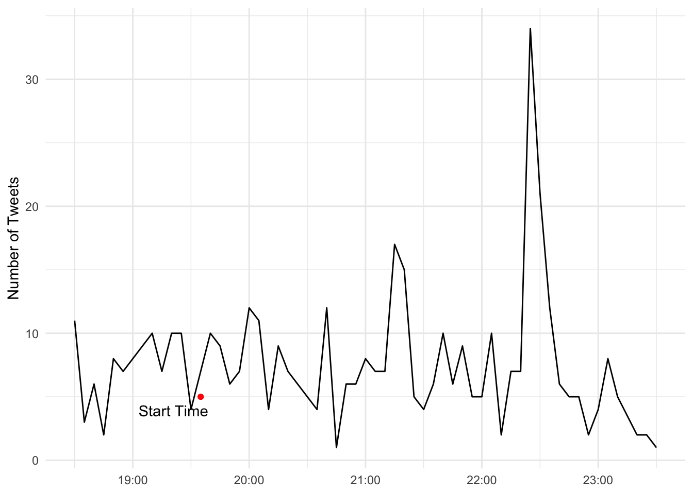

install.packages("rtweet") # installs the rtweet package
install.packages("tidytext") # installs the tidytext package
install.packages("tidyverse") # A collection of packages, includes the stringr packages
install.packages("lubridate") # Provides functions to make working with dates/times easier34 Rtweet and Text Analysis
By Collin K. Berke, Ph.D.
One of the best rivalries in college volleyball was played on Saturday, November 2, 2019. The seventh-ranked Penn State Nittany Lions (16-3) took on the eigth-ranked Nebraska Cornhuskers (16-3). This match featured two of the best middle blockers in the country, Nebraska’s Lauren Stivrins and Penn State’s Kaitlyn Hord. Stivrins was ranked No. 1 in Big Ten hitting percentage, a .466 before the match up. Hord, close behind, had a .423 hitting percentage and was ranked towards the top as one of the league’s top blockers.
Alongside being a competition between premier players, this match was set to be a battle between two of the winningest coaches in NCAA Women’s Volleyball history. Russ Rose, head coach of the Nittany Lions, came into the match with a 1289-209 (.860) record, 17 Big Ten Conference Championships, and 7 NCAA National Championships. For the Nebraska Cornhuskers’ head coach, John Cook came into the match with a 721-148 (.830) record, 9 Big 12 Conference Championships, 4 Big Ten Conference Championships, and 5 NCAA National Championships. Check out this article here to get a better understanding of the significance of this game and rivalry.
Being a contest between two storied programs, premier players, and two of the most winningest coaches in NCAA volleyball history, this match was poised to be one of the premier Big Ten matches of the 2019 season. If history was to serve as a guide, this match would easily go into five exciting, nail-biting sets.
To no surprise–it did. Nebraska came out victorious, 3 sets to 2, winning the fifth set 15 - 13. Although we have commentators, analysts, and reporters to tell us the story of the game, wouldn’t it be interesting to tell the story from the fan’s perspective? Can what they say allow us to take a pulse of how the fan base feels during the game? We can answer this question using Twitter tweet data, which we will access with the rtweet package.
Question - How do people feel during a game? Positive? Negative? Neutral?
This chapter will teach you how to extract, analyze, and visualize Twitter text data to tell a story about peoples sentiments toward any sport team, player, or event. Although Twitter is conventionally thought of as a social media platform, at a general level, it can be thought of as a corpus of textual data, which is generated by millions of users, talking about a wide array of topics over time.
During this chapter, we will access text data held within the body of tweets, which we will extract and import into R through the use of an API (application programming interface). This can seem like a pretty technical term, but all it really is is a portal to which data can be shared between computers and humans. NPR has an API 101 post on their site, which you can read to get a rough idea of what an API is and how they are used.
In fact, many news organizations provide APIs for people to access and use their data. For example, many news services like The New York Times, NPR, The Associated Press and social media platforms like Facebook have APIs that can be used to access content or varying types of data. Many of these just require you to: a). have a developer account; b) have the proper API keys; and c). use their API in accordance with their terms of service. Every API you come across should have documentation outlining its use.
Above was a pretty hand-wavy explanation of APIs. Indeed, APIs have many different uses beyond just extracting data, but such a discussion is beyond the scope of this chapter. Nevertheless, APIs can be a powerful, useful tool to access data not normally available on web pages or other statistical reporting services.
34.1 Prerequisites
You will need to have a Twitter account to access and extract data. If needed, you can sign up for an account here.
34.1.1 Tools for text analysis
This chapter will also require you to load and acquaint yourself with functions in four packages, rtweet, lubridate, stringr, and tidytext. You may have used some of functions in other portions of this class. Others may be new to you.
rtweetis a R package used to access Twitter data via the Twitter API.lubridateis a package that makes working with dates and times a bit easier.stringris a package that provides several functions to make working with string data a little easier.tidytextis a package used to tidy, analyze, and visualize textual analyses. We will use this package to calculate tweet sentiments (e.g., positive and negative feelings).
This chapter will also use other packages you have gained familiarity with throughout the class: dplyr and ggplot2. To install these packages and load them for use in our analysis session, run the following code:
# Load the packages to be used in your analysis session
library(rtweet)
library(tidytext)
library(tidyverse)
library(lubridate)
library(ggrepel)34.1.2 Working with string data
String data is just basically letters, words, symbols, and even emojis. Take for example the following tweet:
Everything contained in the message portion of the tweet is string data, even the emojis. When it comes to emojis, most have a special textual code that is rendered by a browser or device that gets displayed as an image. For example, the ear of corn emoji is actually written as :corn:, but it gets rendered as an image when we view the tweet on our computers/devices. We can extract, analyze, and visualize this string data to tell a wide range of stories from users’ tweets. Our goal being to show sentiment over the length of a Husker volleyball Match and football game.
34.2 Verifying your account to access Twitter data
Before you can access Twitter data, you will need to verify your account. The rtweet package makes this really easy to do. You will first need to run one of the package’s functions for it to walk you through the authentication process. To do this, let’s just search for the most recent 8000 (non-retweeted) tweets containing the #huskers and #GBR hashtags.
Before you run the following code chunk, though, be aware a few things will take place. First, a browser window will open up asking you to verify that rtweet is allowed to access Twitter data via the API on behalf of your account. Accept this request and enter your credentials if you are asked to. Once you do this, you should get a message in your browser stating you have successfully authenticated the rtweet package. The data will then begin to download. The amount of time needed to import this data will depend on how many tweets the hashtag(s) are associated with. More tweets generally means longer import times.
huskers <- search_tweets(
"#huskers", n = 8000, include_rts = FALSE
)
gbr <- search_tweets(
"#GBR", n = 8000, include_rts = FALSE
)Important Note: Depending on when you run the above code chunk, the API will return different data then the data used for the examples later in this chapter. This is due to the query rate cap Twitter places on it’s API. Twitter’s API caps queries to 18,000 of the most recent tweets during the past couple of days. This cap resets every 15 minutes. The rtweet package does has functionality to pull data once your query limit resets. However, if you’re looking to pull tweets for a very popular event (e.g., The Super Bowl), you may want to consider other options to extract this type of data. This is also important to understand because if you are looking to pull tweets for a specific event, you will need to make sure you are pulling this data within a reasonable time during or after the event. If you don’t, these rate limits might not allow you access the data you need to do your analysis.
The data we will use later for the examples in the chapter can be found here and here. The first data set are tweets that use the #huskers hashtag. The second has data of tweets that use the #gbr hashtag. You will need to download both data sets, put them in the right directory, and import both for the below examples to work correctly. The code to import this data will look something like this:
huskerTweets <- read_csv("data/huskerTweets.csv")Rows: 7974 Columns: 90
── Column specification ────────────────────────────────────────────────────────
Delimiter: ","
chr (49): user_id, status_id, screen_name, text, source, reply_to_status_id...
dbl (13): display_text_width, favorite_count, retweet_count, quoted_favorit...
lgl (25): is_quote, is_retweet, quote_count, reply_count, symbols, ext_medi...
dttm (3): created_at, quoted_created_at, account_created_at
ℹ Use `spec()` to retrieve the full column specification for this data.
ℹ Specify the column types or set `show_col_types = FALSE` to quiet this message.gbrTweets <- read_csv("data/gbrTweets.csv")Warning: One or more parsing issues, see `problems()` for detailsRows: 5678 Columns: 90
── Column specification ────────────────────────────────────────────────────────
Delimiter: ","
chr (49): user_id, status_id, screen_name, text, source, reply_to_status_id...
dbl (13): display_text_width, favorite_count, retweet_count, quoted_favorit...
lgl (25): is_quote, is_retweet, quote_count, reply_count, symbols, ext_medi...
dttm (3): created_at, quoted_created_at, account_created_at
ℹ Use `spec()` to retrieve the full column specification for this data.
ℹ Specify the column types or set `show_col_types = FALSE` to quiet this message.This brings up a good point about saving any data you import from Twitter’s API. Always save your data. Remember those rate limits? If you don’t save your data and too many days pass, you will not be able to access that data again. To do this, you can use the write_as_csv() function from the rtweet package to save a .csv file of your data. The code to do this will look something like this:
write_as_csv(huskerTweets, "data/huskerTweets.csv")Be aware that this function will overwrite data. If you make changes to your huskerTweets object and then run the write_as_csv() function again, it will overwrite your saved file with the modifications you made to your object. The lesson then is to always save an extra copy of your data in a separate directory, just in case you do accidentally make a mistake in overwriting your data.
34.3 The data used here
To provide a little context, I pulled the data in this chapter on Sunday, November 3, 2019. This was the day after Nebraska Football lost to Purdue, and Nebraska Volleyball won against Penn State. You can follow the steps above to download this data for the following examples.
To make it easier to work with, I am going to combine these two data sets into one using the bind_rows() function from dplyr. There is a slight problem though, some people may have had a tweet that contained both the #huskers and #GBR hashtags in their tweet. So if we combine these two data sets, there might be duplicate data. To dedupe the data, we can apply a distinct(text, .keep_all = TRUE) to remove any duplicates. The .keep_all = TRUE argument just tells R to keep all columns in the data frame after our data has been deduped.
tweet_data <- bind_rows(huskerTweets, gbrTweets) %>%
distinct(text, .keep_all = TRUE)34.4 Data Exploration
Let’s explore the data a bit. Run a glimpse(tweet_data) to get a view of what data was returned from twitter. My query on November 3rd, 2019 returned 11,523 non-retweeted tweets from 3,917 accounts using the #huskers and/or the #GBR hashtag within the tweet’s body (again if you ran the code above, your data will be different) .
It’s important to remember these tweets can come from accounts that are people, organizations, and even bots. So when drawing conclusions from this data, make sure to keep in mind that these tweets may not represent the sentiment of just one person. Additionally, it is important to remember that not all fans of a sports team are on or use Twitter, so it surely is not a valid representation of all fan sentiment. Indeed, you could also have fans of other teams using your hashtags.
glimpse(tweet_data)Rows: 11,523
Columns: 90
$ user_id <chr> "x17636179", "x17636179", "x17636179", "x15629…
$ status_id <chr> "x1191100304940396544", "x1190852650905944065"…
$ created_at <dttm> 2019-11-03 21:10:16, 2019-11-03 04:46:11, 201…
$ screen_name <chr> "SeanKeeler", "SeanKeeler", "SeanKeeler", "Hus…
$ text <chr> "ICYMI, #CSURams fans, a recap of @denverpost …
$ source <chr> "Twitter Web App", "Twitter for iPhone", "Twit…
$ display_text_width <dbl> 269, 188, 182, 122, 135, 189, 172, 135, 94, 11…
$ reply_to_status_id <chr> NA, NA, NA, NA, NA, NA, NA, NA, NA, NA, NA, NA…
$ reply_to_user_id <chr> NA, NA, NA, NA, NA, NA, NA, NA, NA, NA, NA, NA…
$ reply_to_screen_name <chr> NA, NA, NA, NA, NA, NA, NA, NA, NA, NA, NA, NA…
$ is_quote <lgl> FALSE, TRUE, FALSE, FALSE, FALSE, FALSE, FALSE…
$ is_retweet <lgl> FALSE, FALSE, FALSE, FALSE, FALSE, FALSE, FALS…
$ favorite_count <dbl> 0, 0, 1, 116, 19, 2, 40, 23, 149, 5, 31, 15, 4…
$ retweet_count <dbl> 0, 0, 0, 6, 1, 0, 1, 2, 5, 1, 3, 1, 0, 0, 0, 0…
$ quote_count <lgl> NA, NA, NA, NA, NA, NA, NA, NA, NA, NA, NA, NA…
$ reply_count <lgl> NA, NA, NA, NA, NA, NA, NA, NA, NA, NA, NA, NA…
$ hashtags <chr> "CSURams Huskers ProudToBe AtThePeak CSU", "Hu…
$ symbols <lgl> NA, NA, NA, NA, NA, NA, NA, NA, NA, NA, NA, NA…
$ urls_url <chr> "tinyurl.com/y2b3kog9 tinyurl.com/yy7ntps4", "…
$ urls_t.co <chr> "https://t.co/1FlAnRRgEq https://t.co/t8j1LJe8…
$ urls_expanded_url <chr> "https://tinyurl.com/y2b3kog9 https://tinyurl.…
$ media_url <chr> NA, NA, NA, "http://pbs.twimg.com/ext_tw_video…
$ media_t.co <chr> NA, NA, NA, "https://t.co/FSCP827hg0", "https:…
$ media_expanded_url <chr> NA, NA, NA, "https://twitter.com/HuskerSports/…
$ media_type <chr> NA, NA, NA, "photo", "photo", "photo", "photo"…
$ ext_media_url <chr> NA, NA, NA, "http://pbs.twimg.com/ext_tw_video…
$ ext_media_t.co <chr> NA, NA, NA, "https://t.co/FSCP827hg0", "https:…
$ ext_media_expanded_url <chr> NA, NA, NA, "https://twitter.com/HuskerSports/…
$ ext_media_type <lgl> NA, NA, NA, NA, NA, NA, NA, NA, NA, NA, NA, NA…
$ mentions_user_id <chr> "x8216772", "x8216772", "x24725032", "x1210226…
$ mentions_screen_name <chr> "denverpost", "denverpost", "DPostSports", "Ha…
$ lang <chr> "en", "en", "en", "en", "en", "en", "en", "en"…
$ quoted_status_id <chr> NA, "x1190803840213209088", NA, NA, NA, NA, NA…
$ quoted_text <chr> NA, "From Nebraska to Fort Collins, how CSU Ra…
$ quoted_created_at <dttm> NA, 2019-11-03 01:32:14, NA, NA, NA, NA, NA, …
$ quoted_source <chr> NA, "TweetDeck", NA, NA, NA, NA, NA, NA, NA, N…
$ quoted_favorite_count <dbl> NA, 5, NA, NA, NA, NA, NA, NA, NA, NA, 194, NA…
$ quoted_retweet_count <dbl> NA, 1, NA, NA, NA, NA, NA, NA, NA, NA, 16, NA,…
$ quoted_user_id <chr> NA, "x24725032", NA, NA, NA, NA, NA, NA, NA, N…
$ quoted_screen_name <chr> NA, "DPostSports", NA, NA, NA, NA, NA, NA, NA,…
$ quoted_name <chr> NA, "Denver Post Sports", NA, NA, NA, NA, NA, …
$ quoted_followers_count <dbl> NA, 34841, NA, NA, NA, NA, NA, NA, NA, NA, 109…
$ quoted_friends_count <dbl> NA, 395, NA, NA, NA, NA, NA, NA, NA, NA, 601, …
$ quoted_statuses_count <dbl> NA, 113697, NA, NA, NA, NA, NA, NA, NA, NA, 19…
$ quoted_location <chr> NA, "Denver, Colorado", NA, NA, NA, NA, NA, NA…
$ quoted_description <chr> NA, "Sports news & analysis from @denverpost o…
$ quoted_verified <lgl> NA, TRUE, NA, NA, NA, NA, NA, NA, NA, NA, FALS…
$ retweet_status_id <lgl> NA, NA, NA, NA, NA, NA, NA, NA, NA, NA, NA, NA…
$ retweet_text <lgl> NA, NA, NA, NA, NA, NA, NA, NA, NA, NA, NA, NA…
$ retweet_created_at <lgl> NA, NA, NA, NA, NA, NA, NA, NA, NA, NA, NA, NA…
$ retweet_source <lgl> NA, NA, NA, NA, NA, NA, NA, NA, NA, NA, NA, NA…
$ retweet_favorite_count <lgl> NA, NA, NA, NA, NA, NA, NA, NA, NA, NA, NA, NA…
$ retweet_retweet_count <lgl> NA, NA, NA, NA, NA, NA, NA, NA, NA, NA, NA, NA…
$ retweet_user_id <lgl> NA, NA, NA, NA, NA, NA, NA, NA, NA, NA, NA, NA…
$ retweet_screen_name <lgl> NA, NA, NA, NA, NA, NA, NA, NA, NA, NA, NA, NA…
$ retweet_name <lgl> NA, NA, NA, NA, NA, NA, NA, NA, NA, NA, NA, NA…
$ retweet_followers_count <lgl> NA, NA, NA, NA, NA, NA, NA, NA, NA, NA, NA, NA…
$ retweet_friends_count <lgl> NA, NA, NA, NA, NA, NA, NA, NA, NA, NA, NA, NA…
$ retweet_statuses_count <lgl> NA, NA, NA, NA, NA, NA, NA, NA, NA, NA, NA, NA…
$ retweet_location <lgl> NA, NA, NA, NA, NA, NA, NA, NA, NA, NA, NA, NA…
$ retweet_description <lgl> NA, NA, NA, NA, NA, NA, NA, NA, NA, NA, NA, NA…
$ retweet_verified <lgl> NA, NA, NA, NA, NA, NA, NA, NA, NA, NA, NA, NA…
$ place_url <chr> NA, NA, NA, NA, NA, NA, NA, NA, NA, NA, NA, NA…
$ place_name <chr> NA, NA, NA, NA, NA, NA, NA, NA, NA, NA, NA, NA…
$ place_full_name <chr> NA, NA, NA, NA, NA, NA, NA, NA, NA, NA, NA, NA…
$ place_type <chr> NA, NA, NA, NA, NA, NA, NA, NA, NA, NA, NA, NA…
$ country <chr> NA, NA, NA, NA, NA, NA, NA, NA, NA, NA, NA, NA…
$ country_code <chr> NA, NA, NA, NA, NA, NA, NA, NA, NA, NA, NA, NA…
$ geo_coords <chr> "NA NA", "NA NA", "NA NA", "NA NA", "NA NA", "…
$ coords_coords <chr> "NA NA", "NA NA", "NA NA", "NA NA", "NA NA", "…
$ bbox_coords <chr> "NA NA NA NA NA NA NA NA", "NA NA NA NA NA NA …
$ status_url <chr> "https://twitter.com/SeanKeeler/status/1191100…
$ name <chr> "Sean Keeler", "Sean Keeler", "Sean Keeler", "…
$ location <chr> "Denver, CO", "Denver, CO", "Denver, CO", "Neb…
$ description <chr> "@DenverPost staffer, dad, husband, drummer, d…
$ url <chr> "https://t.co/z0eFbv9eaz", "https://t.co/z0eFb…
$ protected <lgl> FALSE, FALSE, FALSE, FALSE, FALSE, FALSE, FALS…
$ followers_count <dbl> 5245, 5245, 5245, 30451, 30451, 30451, 30451, …
$ friends_count <dbl> 1619, 1619, 1619, 701, 701, 701, 701, 701, 701…
$ listed_count <dbl> 296, 296, 296, 247, 247, 247, 247, 247, 247, 2…
$ statuses_count <dbl> 28124, 28124, 28124, 12801, 12801, 12801, 1280…
$ favourites_count <dbl> 4498, 4498, 4498, 6033, 6033, 6033, 6033, 6033…
$ account_created_at <dttm> 2008-11-25 23:53:13, 2008-11-25 23:53:13, 200…
$ verified <lgl> FALSE, FALSE, FALSE, TRUE, TRUE, TRUE, TRUE, T…
$ profile_url <chr> "https://t.co/z0eFbv9eaz", "https://t.co/z0eFb…
$ profile_expanded_url <chr> "http://www.seankeeler.tumblr.com", "http://ww…
$ account_lang <lgl> NA, NA, NA, NA, NA, NA, NA, NA, NA, NA, NA, NA…
$ profile_banner_url <chr> "https://pbs.twimg.com/profile_banners/1763617…
$ profile_background_url <chr> "http://abs.twimg.com/images/themes/theme10/bg…
$ profile_image_url <chr> "http://pbs.twimg.com/profile_images/118130627…As you can see, glimpse() returns a lot of columns that are not really relevant to our analysis. Let’s apply a select() function to only retain the data relevant to our analysis, .
tweet_data <- tweet_data %>%
select(user_id, status_id, created_at, screen_name, text, display_text_width,
favorite_count, retweet_count, hashtags, description, followers_count)34.5 Cleaning data for analysis
If you examine the data set, you will see this data needs some wrangling. First, we need to fix the created_at variable. Right now it is represented in Greenwich Mean Time (GMT), but we need it to be in Central Standard Time (CST). We do this so we can make sense of when during the game things happened. Second, the data is outside of the time frame we are interested in examining, so we need to filter the data to be windowed during the time of the game. We will filter the data by date and time, examining tweets a little before and after the game.
34.5.1 Fixing the date and focusing only on game tweets
We will use the with_tz() on our created_at variable within our mutate() function to transform the created_at column into Central Standard Time (CST). We do this by setting the tzone argument to "America/Chicago". Once out time is adjusted, we need group tweets within a specific bin of time. For this example I have decided to bin tweets to the nearest 5 minute mark. We can do this by using the round_time() function provided to us by the lubridate package.
Then, since we are only interested in tweets during the game, we can apply a dplyr filter() function to window our data set to tweets being posted around the start and end of the game.
volleyball_tweets <- tweet_data %>%
mutate(created_at = with_tz(created_at, tzone = "America/Chicago"),
created_at = round_time(created_at, "5 mins", tz = "America/Chicago")) %>%
filter(created_at >= "2019-11-02 18:30:00" & created_at <= "2019-11-02 23:30:00") 34.6 Number of tweets throughout the game
One question we might have pertains to the number of tweets that occur during the course of the match. To do this, all we need to do is group_by() our tweets by our created_at variable, and then use the count() function to count the number of tweets within each five minute bin. We then use ggplot to plot a line chart where created_at is placed on the x-axis and n, number of tweets, is placed on the y-axis.
start_time <- tibble(time = as_datetime("2019-11-02 19:35:00", tz = "America/Chicago"), label = "Start Time")
volleyball_time <- volleyball_tweets %>%
group_by(created_at) %>%
count()
ggplot() +
geom_line(data = volleyball_time, aes(x = created_at, y = n)) +
geom_point(data = start_time, aes(x = time, y = 5), color = "red") +
geom_text_repel(data = start_time, aes(x = time, y = 3, label = label), nudge_x = -2) +
labs(y = "Number of Tweets",
x = "Central Standard Time (CST)") +
theme_minimal() +
theme(axis.title.x = element_blank())
There you have it. A trend line plotting tweet volume throughout the course of the event. Do you see any areas where the match might have had a significant number of tweets?
34.7 Tidying the text data for analysis, applying the sentiment scores
Okay, that’s cool–but what we really want to know is what are peoples’ sentiments throughout the game? Did they feel positive or negative throughout the event? Were there times that were more positive or negative? To achieve this, we are going to use the tidytext package to tidy up our text data and apply a sentiment score to each word held within each tweet. Let’s break this down step-by-step.
First, we need to get the dictionary that contains the sentiment scoring for thousands of words used in the English language. afinn <- get_sentiments("afinn") does just that for us. The development of these sentiment dictionaries is beyond this chapter. However, most of these dictionaries are crowd sourced by having people provide self-responses on how positive or negative a word is to them. For now, just understand the affin variable contains many words that have been rated for how positive or negative a word is on a scale that ranges from -5 to 5. -5 being the most negative, and 5 being the most positive. If you want to learn more about this dictionary or others, you can read more about them here.
Second, now that we have our dictionary imported, we need to clean up our tweets data set so we can apply sentiment scores to each word used within each tweet. There’s one problem, though. Each row in our data set is a complete tweet. For us to apply a sentiment score for each word, each word needs to get its own row. This is where the unnest_tokens() function from the tidytext package comes into play. We use this function to create a data set that will create a new column called word, which will place every word from every tweet in our data set on its own row, which it knows which text data to this because we set the the second argument to the column name that holds our text data. In this case, we give it the text column. Once you run this code, if you look at the volleyball_tweets_tidy object, you should now have a data set where every row has its own word which was done for every tweet. This data frame should now be a super long data frame.
Lastly, the English language has many words that really don’t mean anything in regards to sentiment. Take for example the word ‘the’. This article really doesn’t represent a positive or negative sentiment. Thus, these types of words need to be taken out of our data set to enhance improve the accuracy of our analysis. To do this, we will apply the anti_join(stop_words) to our dplyr chain. All this does is get rid of the stop words in our data set that really don’t contribute to the sentiment scores we are eventually going to calculate.
If you get an error on the next bit of code, you’ll likely need to install the textdata package on the console with install.packages("textdata"). Next, if this next block of code hangs, it’s because in the console you’re being asked if you want to download some data. You do indeed want to do that, so type 1 and hit enter.
afinn <- get_sentiments("afinn")
volleyball_tweets_tidy <- volleyball_tweets %>%
unnest_tokens(word, text) %>%
anti_join(stop_words) Joining, by = "word"34.7.0.1 Fan sentiment over the game
Now that we have a tidied textual data set, all we need to do is apply our sentiment scores to these words using the inner_join(), then group_by() our created_at variable, and calculate the mean sentiment for each five minute interval. At this point, we will use ggplot to plot sentiment of the tweets over time. We will do this by plotting the created_at variable on the x-axis and the newly calculated sentiment variable on the y-axis. The rest is just adding annotations and styling, which we are already familiar with.
volleyball_tweets_sentiment <- volleyball_tweets_tidy %>%
inner_join(afinn) %>%
group_by(created_at) %>%
summarise(sentiment = mean(value))Joining, by = "word"ggplot() +
geom_line(data = volleyball_tweets_sentiment, aes(x = created_at, y = sentiment)) +
geom_text(aes(x = as_datetime("2019-11-02 19:00:00", tz = "America/Chicago"), y = 3), color = "darkgreen", label = "Positive Sentiment", size = 5) +
geom_text(aes(x = as_datetime("2019-11-02 19:00:00", tz = "America/Chicago"), y = -3), color = "red", label = "Negative Sentiment", size = 5) +
labs(title = "People's Sentiment on Twitter Positive Towards\nHusker Volleyball's Win Against Penn State",
subtitle = "Sentiment mostly positive throughout the game",
caption = "Source: #huskers and #GBR Tweets, 2019-11-02 | By Collin K. Berke",
y = "Sentiment",
x = "Central Standard Time (CST)") +
scale_y_continuous(limits = c(-4, 4)) +
theme_minimal() +
theme(axis.title.x = element_blank(),
plot.title = element_text(size = 16, face = "bold"),
axis.title = element_text(size = 10),
axis.text = element_text(size = 7)
)When looking at this trend line, you can see that during the volleyball game, tweets using the #husker and #gbr hashtags had some wide variation in sentiment. Overall it seems that tweets during the volleyball match were mostly positive, where at times it dipped negative. Why might this be the case? Well, unfortunately, even though this was a big game for Husker volleyball, not many people were tweeting during the match (take a look at the number of tweets chart above). So if there was one word used in a tweet that was ranked as very negative in sentiment, it would have easily drove our average sentiment into the negative region quickly.
Also, we need to consider that this match took place after the Huskers loss to Purdue, which we will examine in the next example. This is important to know because people during the volleyball match may have also been tweeting about how poorly the football game went earlier in the day. Thus, low tweet volume mixed with the potential for tweets referencing something other than the match at hand may have had some influence on the sentiment scores.
There’s also one last thing to keep in mind when you draw conclusions from this type of text data. Language is complex–it can have multiple meanings, which is highly influenced by context. Take for example the word ‘destroy’, like its use in the following statement: “This team is going to destroy the defense today.” Although we clearly can see this is a positive statement, when a computer applies sentiment scores, the context of the statement is stripped away, and destroy will be scored as negative sentiment. In short, computers are not smart enough to include context when they calculate sentiment, yet. So, keep this limitation in mind when you draw conclusions from your sentiment analyses using text data.
34.7.1 Example 2 - Nebraska’s loss to Purdue, what were fan’s sentiments towards this loss?
The Nebraska Cornhuskers–a 3-point favorite going into West Lafayette, IN–squared off with the Purdue Boilermakers on November 2, 2019. Purdue was 2-6 on the season. Nebraska, with a 4-4 record coming off of a 38-31 home loss to Indiana, had many fans hoping Scott Frost could lead his team to a must needed win. Especially given the expectation was the Cornhuskers would go 6-6 on the season, and the team still had to play Wisconsin (6-2), Maryland (3-6), and Iowa (6-2) to get to those needed six wins to become bowl eligible. So, how did people particularly take this loss? Let’s use our Twitter data to get an answer.
Again, we need to fix the time zone with the with_tz() function so the data is represented in Central Standard Time (CST). Then we apply our filter() command to window our data to when the game was taking place.
football_tweets <- tweet_data %>%
mutate(created_at = with_tz(created_at, tzone = "America/Chicago"),
created_at = round_time(created_at, "5 mins", tz = "America/Chicago")) %>%
filter(created_at >= "2019-11-02 11:00:00" & created_at <= "2019-11-02 15:30:00") Now, let’s just get a sense of the number of tweets that occurred at certain points in the game. We again need to do some data wrangling with group_by(), and then we use the count() function to add up all the tweets during each five minute interval. Once the data is wrangled, we can use our ggplot code to visualize tweet volume throughout the game.
football_time <- football_tweets %>%
group_by(created_at) %>%
count()
ggplot() +
geom_line(data = football_time, aes(x = created_at, y = n)) +
theme_minimal() +
labs(y = "Number of Tweets")Looking at this plot, we can see the tweet volume is a lot higher than that of the volleyball match. In fact, it looks like towards the end of the game there was a five minute interval where ~80 or so tweets occurred. Given the outcome of the game, I assume people were not real happy during this spike in activity. Well we have the tools to answer this question.
As before, let’s pull in our sentiment library with the get_sentiments() function. Then lets tidy up our tweet data using the unnest_tokens() and anti_join(stop_words). Remember this step just places every word within a tweet on its own row and filters out any words that don’t have any real meaning to the calculation of sentiment (i.e., and, the, a, etc.).
afinn <- get_sentiments("afinn")
football_tweets_tidy <- football_tweets %>%
unnest_tokens(word, text) %>%
anti_join(stop_words) Joining, by = "word"We now have our clean textual data, let’s apply sentiment scores for each word using the inner_join(affin) function, group_by(created_at) to create a group for each five minute interval, and then use summarise() to calculate then mean sentiment for each time period.
You can then use the ggplot code to plot sentiment over time, introduce annotations to highlight specific aspects within our plot, and then apply styling to the plot to move it closer to publication readiness. Now for the big reveal, how did people take the loss to a 2-6 Purdue? Run the code and find out.
football_tweets_sentiment <- football_tweets_tidy %>%
inner_join(afinn) %>%
group_by(created_at) %>%
summarise(sentiment = mean(value)) %>%
arrange(sentiment)Joining, by = "word"ggplot() +
geom_line(data = football_tweets_sentiment, aes(x = created_at, y = sentiment)) +
geom_text(aes(x = as_datetime("2019-11-02 14:30:00", tz = "America/Chicago"), y = 2), color = "darkgreen", label = "Positive Sentiment", size = 5) +
geom_text(aes(x = as_datetime("2019-11-02 14:30:00", tz = "America/Chicago"), y = -2), color = "red", label = "Negative Sentiment", size = 5) +
scale_y_continuous(limits = c(-2.5, 2.5)) +
labs(title = "People's Sentiment on Twitter Negative\nTowards Husker Football's Loss to Purdue",
subtitle = "People were positive at the start and part of the first half,\nthen negative throughout",
caption = "Source: #huskers and #GBR Tweets, 2019-11-02 | By Collin K. Berke",
y = "Sentiment",
x = "Central Standard Time (CST)") +
theme_minimal() +
theme(axis.title.x = element_blank(),
plot.title = element_text(size = 16, face = "bold"),
axis.title = element_text(size = 10),
axis.text = element_text(size = 7)
)As you can see, it started out pretty positive. Then, it started to go negative throughout the first half. However, there was a bump, which was around the time D-Lineman, Darrion Daniels almost scored a pick six. Around halftime, we can see a little bit of a bump towards positive sentiment. This was probably most likely due to people cheering on the Huskers to come out strong after the half. As the second half progressed, you can see things turned for the worst again, and sentiment became negative up until the end of the game, most likely because people realized they were going to get another L on the schedule. You can relive all this excitement again by catching the game recap here.